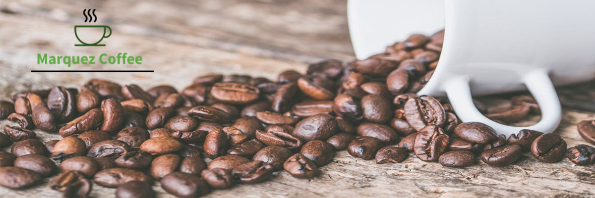

Para los consumidores es importante conocer el origen del producto, no sólo por dar una mejor idea de la especie vegetal del café por el que están pagando y consumiendo (Robusta o Arábica). Un consumidor educado es consciente de la importancia de la Especie y el Origen del café que consume, pues de estos factores depende en gran medida la calidad de la bebida.
En realidad, el mayor trabajo y esfuerzo para producir un café de calidad no ocurre completamente en la preparación de un espresso, sino en el paciente y dedicado esfuerzo de un productor de café en las montañas de un país tropical como Colombia. Si el origen no es reconocido y apreciado, ese productor no va a seguir teniendo los incentivos para esforzarse y producir un café de calidad superior. Son los productores quienes tienen la verdadera vocación de ser expertos en la producción de café de calidad.
1. El tamaño si importa
La selección de los granos del café por tamaño es una de las primeras fases del proceso, los de primera calidad son los más grandes. Los rotos o con agujeros son síntomas de mala calidad y generalmente se usan para cafés solubles.
2. Café ¿100% puro?
La etiqueta de cientos de bolsas de café afirman serlo. Para determinar la pureza basta agregar una cucharada de café en un vaso de agua, si no se disuelve estaremos frente a uno de calidad.
3. El tipo de grano
Las especies que principalmente se comercializan son la arábica, alargado y cultivado en zonas altas de América y Asia; y la robusta o canephora, redondo y cultivado en zonas bajas de África.
4. Tipo de tueste
El proceso de tueste permite liberar la esencia del aroma y el sabor, entre mayor tueste se obtiene (claro, sin quemarlo) más cuerpo, y el color de la bebida es más negro; mientras que uno medio brinda mayor dulzura y acidez.
5. Elige el molde perfecto
Si no está demasiado molturado, al realizar la infusión no se extraerán todos los sabores, y si lo está demasiado, se disolverán excesivamente los componentes menos aromáticos y más amargos.